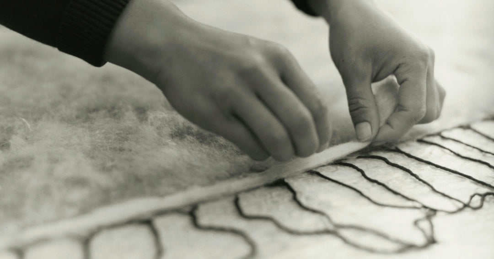
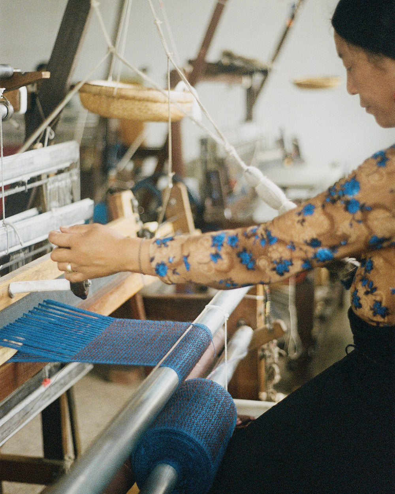
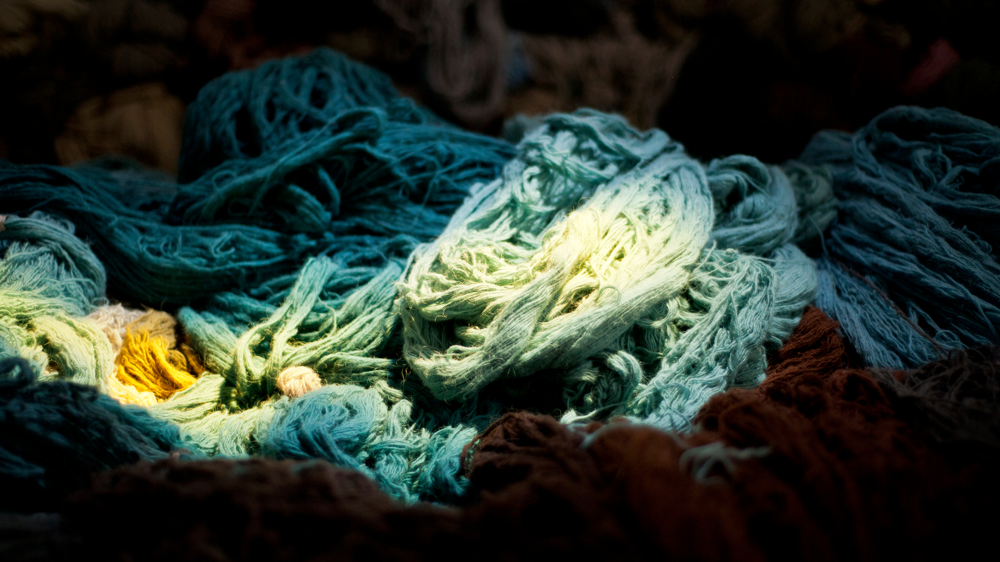
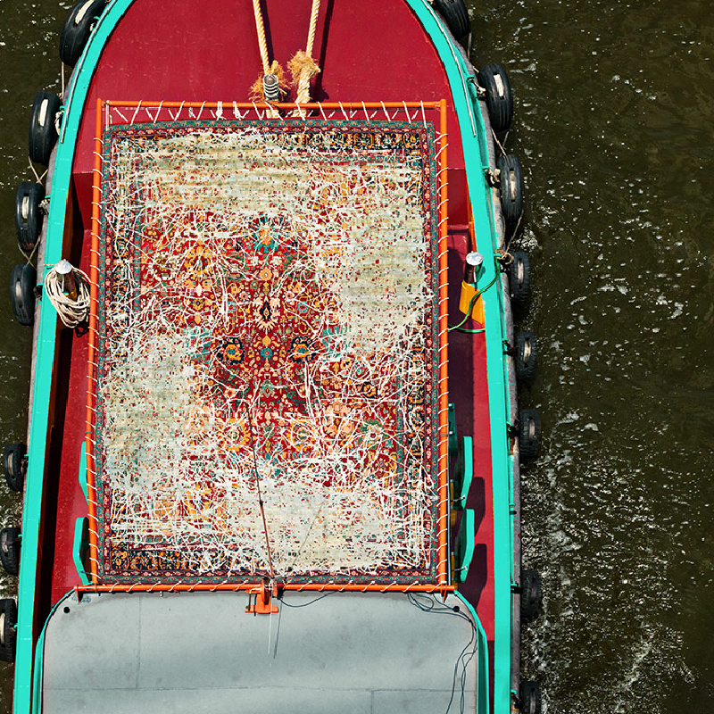
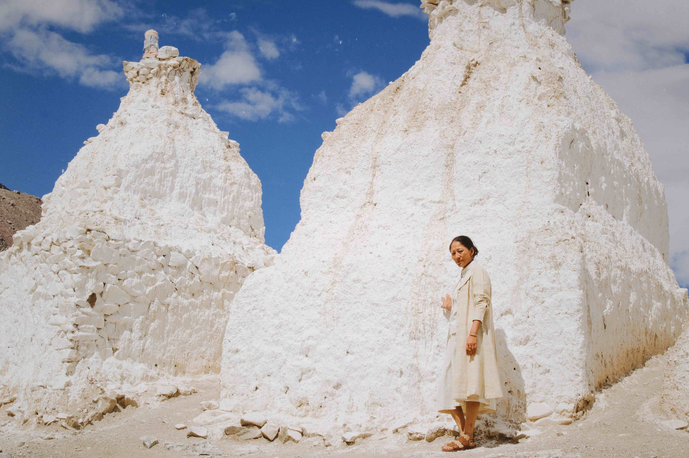
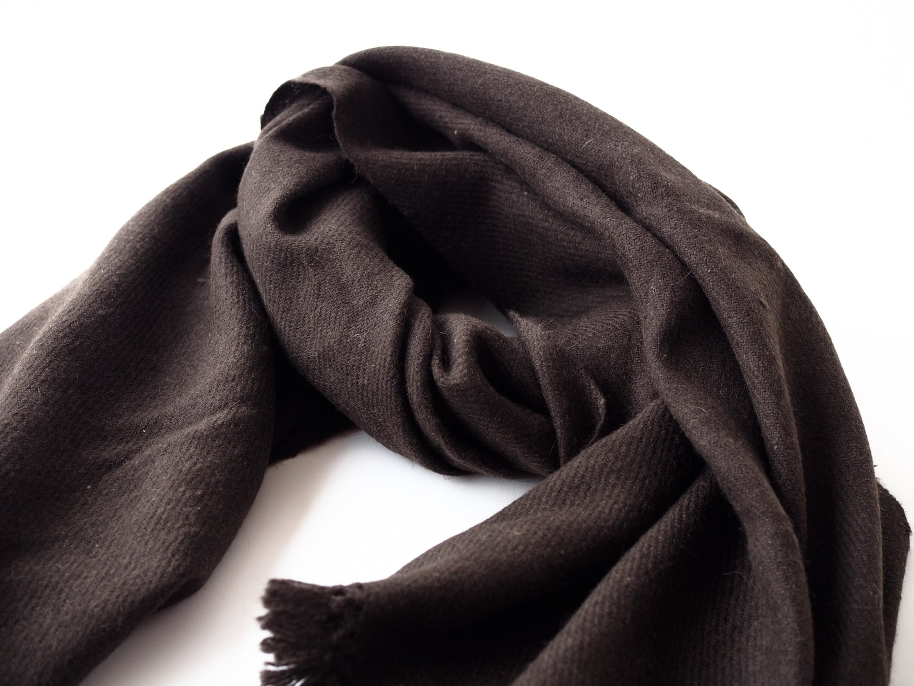

Section 01
壹品牌基石
以下取自已定稿的 BP 与三份调研报告，是所有视觉决策的出发点，不做改动。
| 要素 | 内容 |
|---|
| 英文定位 | ANANDALAM brings the sacred craftsmanship of the Tibetan Plateau into contemporary living spaces. |
| 产地三角 | 拉萨（藏饰+枢纽）· 江孜（藏毯，核心） · 林芝（牦牛绒）——视觉上必须让「三个真实地名」反复出现 |
| 核心人群 | A Wellness Enthusiast（冥想/瑜伽，28–40）· B Design Collector（高端家居藏家，35–55）· C Cultural Explorer（25–35） |
| 价格带 | 藏毯 $375–3,111 / 围巾 $267–422 → 高客单，每张图都要「值这个价」 |
| 最大短板 | 品牌故事「缺人」→ 本次拍摄的头号任务是把「人」拍回来 |
视觉人格（三个词，各配一张定调参考）

静 Quiet — Norlha 首屏顶奢敢用黑白工艺过程做首屏：留白、低饱和、慢节奏，不做促销感。

真 Grounded — Norlha 工坊实拍环境真实但构图干净，「工坊实拍不土」的标杆。纪实优先于摆拍。

贵 Considered — Jan Kath 纱线静物把原材料拍成静物油画：细节经营出的贵，不是金光闪闪的贵。
Section 02
贰色彩系统
色板从藏地物料本身取色：僧袍与大漆的红、唐卡鎏金、植物染靛蓝、未染色的高原羊毛。（色值为本手册设计定义）
藏红 Lacquer Crimson#7E2A1E主色。CTA、标题强调。全页面积 ≤10%
鎏金 Gilded Ochre#B98A2F点缀。分割线、小标、hover。≤5%，禁大面积铺金
靛夜 Indigo Night#2E3F55辅助冷色。信息模块底、次级按钮，平衡暖调
羊毛白 Wool Cream#F6F1E7全站底色。不用纯白——羊毛白即未染色的原料本身
牦牛棕 Yak Umber#2B2118正文与深底。不用纯黑，深棕来自牦牛绒本色
使用比例铁律：羊毛白 70% / 牦牛棕（文字）20% / 藏红 ≤10% / 鎏金 ≤5%。深底上一律用暖白 #F2E9DA 文字，禁止灰字上深底；正文对比度 ≥ 7:1。
色彩感觉的实物参照
Section 03
叁字体系统
北美站全英文。衬线担当「工艺感」，无衬线担当「可读性」，一共只用两个家族。
Display · 标题与品牌语 — EB Garamond（Google Fonts 免费商用）
Hand-knotted in Gyantse, Tibet.
用于 H1/H2、金句、系列名。字重 400–600。
Wordmark · 品牌字标 — EB Garamond 全大写 + 0.4em 字距
ANANDALAM
字标即 Logo（第一阶段不做图形符号）。最小宽 120px，四周留空 ≥ 字高 1 倍。
Body · 正文与 UI — Inter 或 Karla（二选一后全站锁定）
Each rug takes 60–90 days on a traditional loom. Expect natural shedding in the first weeks — it is wool being wool.
正文 16–17px / 行高 1.7 / 行宽 ≤ 68ch；参数表格用 tabular-nums。
Eyebrow · 小标签 — 全大写 + 0.25em 字距 + 鎏金色
FROM THE TRIANGLE OF ORIGIN
Shopify 落地：Dawn 主题 Heading font = EB Garamond，Body font = Inter/Karla。中文场景（国内小程序）用思源宋体 + 苹方/微软雅黑，同一套色板。
Section 04
肆摄影风格铁律
这一章给摄影师看。每条铁律配对标品牌实例——风格结论提炼自 6 品牌 83 条实抓素材的共性。
铁律一 · 自然光优先，禁影棚彩色灯效
铁律二 · 工艺线可拍黑白——让「手艺」当主角
铁律三 · 人要有名字——工匠肖像 + 真名
铁律四 · 产品回产地——竞品最难抄的镜头
铁律五 · 微距肌理——高客单靠细节「值回票价」
✓ 要这样拍
- 双手 + 经纬线 + 半成品同框（全部品牌的共同机位）
- 浅景深微距：捻度、绒头、锁边、流苏
- 同一单品多种用法/裹法——不加 SKU 也能出内容量
- 横竖双版：每个视频机位同时出 16:9 和 9:16
- 请一位署名纪实摄影师成套输出（KAL 模式）
✗ 不要这样拍
- 刻意「民族风」摆拍——日常服饰本身就是文化符号
- 宗教仪式当卖点拍（红线，见第玖章）
- 大红大金饱和堆砌、影楼式布光
- 只拍产品不拍人（重蹈「缺人」短板）
- 杂乱工坊全景直出——收进局部或转黑白
Section 05
伍Shopify 首页规划
九个模块自上而下，每块配参考图。红边框 = 必须靠这次赴藏拍摄产出。
① Hero 首屏10–20 秒无声循环视频（织机/高原），叠一句定位语 + Shop the Collection。桌面/移动横竖双版。■ 赴藏拍
Tufenkian hero 横版开屏动态影像代替静态大图。
Tufenkian hero 竖版移动端专用竖版——拍摄时同机位双版。
KAL 无声循环15 秒环境循环即可撑起首屏氛围。
② 产地三角条Lhasa · Gyantse · Nyingchi 三地名+一句话+小图，点击进产地故事页——「三角壁垒」的视觉化。■ 赴藏拍
③ 核心系列 Gyantse CollectionPrayer Mat / Meditation Mat / Wall Tapestry / Floor Rug 四档规格卡片，平铺图统一角度统一底色。□ 棚拍
④ 工艺四步羊毛→手纺→植物染→手工打结，一步一图一动词，配 60–90 天工期数字。■ 赴藏拍
⑤ 具名工匠2–3 位江孜织工肖像+真名+一句话，链到 Our Artisans 页——补「缺人」短板的正面战场。■ 赴藏拍
⑥ 产品回产地大图藏毯铺在高原草甸的全幅横图——品牌最独有、竞品最难抄的画面。■ 赴藏拍
Jan Kath 山地版我们要拍的就是这张的西藏版。

Jan Kath 航拍系列页可以像杂志专题一样戏剧化。
⑦ 信任与护理VOC 预教育：掉毛/羊毛味/使用寿命三问三答 + 溯源承诺——把通病提前讲透=信任。□ 文案+图标
⑧ Journal 入口「Travels to Tibet」拍摄手记 2–3 篇（Pippa's Journal 模式），SEO+故事双料资产。■ 赴藏拍
⑨ Email 捕获定制 waitlist + 新系列通知；quiet luxury 语气，不打折扣弹窗。□ 设计
Section 06
陆PDP 产品详情页规划
每个藏毯 SKU 标准图组＝7 张图 + 1 支视频。左文右图，棚拍与藏区拍摄共用的验收清单。
围巾/藏饰的 PDP 参考（第二阶段用）
PDP 文字模块（与图组配套）
- Provenance 溯源块：Woven in Gyantse · 工匠名 · 60–90 天工期 · 材料（Highland wool, plant-dyed）。
- Honest Wool 预教育块：主动讲掉毛期、羊毛味消散、色泽变化——通病提前教育变信任（VOC 结论）。
- 护理与合规：护理说明 + FTC 标签信息；Floor Rug 尺寸/用途落定后补阻燃归类。
Section 07
柒Instagram 内容矩阵
上线前先养号：九宫格三线轮转——工艺 / 产品 / 高原。全部素材从这次拍摄一站式产出。
| 内容类型 | 格式 | 内容与钩子 | 频率 |
|---|
| REELS · 竖版 9:16（主要增长引擎） |
| 织造过程 ASMR | 15–30s | 织机声原声+双手特写，无配乐或极简配乐 | 每周 1–2 |
| 产品回产地 | 15–20s | 毯子在草甸展开/挂上藏式门廊的过程镜头——独有画面 | 每周 1 |
| 工匠故事 | 30–60s | 一位工匠·名字·一句话（字幕），Travels to Tibet 切片 | 每两周 1 |
| 60–90 天倒计时 | 系列 | 一张定制毯从图纸到完成的跟拍连载 | 按进度 |
| 静态帖 · 4:5（调性资产） |
| 产品平铺/细节 | 4:5 | 统一羊毛白底或高原实景，配一句设计寓意 | 每周 1–2 |
| 黑白工艺 | 4:5 | Norlha 式黑白双手系列，做成可识别栏目 | 每周 1 |
| 高原风景/静物 | 4:5 | 经幡佛塔远景、染料纱线静物 | 穿插 |
| STORIES / PINTEREST |
| Stories 幕后 | 9:16 | 拍摄花絮、打包发货；Highlights：Craft / Origin / Care | 日常 |
| Pinterest 长图 | 2:3 | 空间场景图+「Tibetan rug in modern living room」关键词 | 每周 3–5 pin |
三条内容线的视觉基准
视频节奏基准 — Norlha 品牌片慢节奏、自然声、胶片调色——Reels 的剪辑感觉照这个来。

系列专题基准 — KAL lookbook当季系列统一场景成组拍，九宫格成套发。

纪实感基准 — KAL 委托摄影署名摄影师成套输出，全渠道一个 LUT。
Section 08
捌赴藏拍摄 Shot List
按拍摄场景分五个 Block，共 32 个镜头。★＝最高优先级（缺了网站开不了张）。表格现场打勾，参考图列点击看原图。
| 编号 | 镜头内容 | 景别/形式 | 用途 | 参考图 |
|---|
| BLOCK A · 江孜织坊 — 工艺线（1–2 天，光线最好时段拍特写） |
| A1 ★ | 双手+经纬线+半成品同框（多机位反复拍） | 特写/微距 | 首页④ PDP#5 Reels | |
| A2 ★ | 织机整体+织工工作全景（杂物清场） | 中景 | 首页① hero、工艺页 | |
| A3 ★ | 手纺线/纺锤旋转（老匠人侧脸入画） | 特写 | 工艺四步「手纺」 | |
| A4 ★ | 植物染：染料静物+染缸提纱瞬间 | 静物+中景 | 工艺四步「植物染」 | |
| A5 ★ | 手工打结逐帧（微距慢动作视频） | 微距/视频 | 工艺四步「打结」、PDP 视频 | |
| A6 | 剪花/修绒工序（剪刀+绒面浮雕） | 特写 | 工艺页、Reels | |
| A7 | 图纸/格纸设计稿+手指点图对照半成品 | 特写 | 定制页（60–90 天叙事） | |
| A8 | 染色纱线堆/线轴色卡阵列（静物油画光） | 静物 | 素材库、about 彩蛋 | |
| A9 ★ | 10–20s 无声循环：织机节奏（横竖双版） | 视频 | 首页① hero 循环 | 参考本页 §伍-① 三支 hero 视频 |
| BLOCK B · 具名工匠 — 人物线（穿插 A 进行，逐人登记姓名+工序） |
| B1 ★ | 工匠正面肖像 ×3–5 人（窗光，人+材料同框） | 肖像 | 首页⑤、Our Artisans 页 | |
| B2 | 工匠工作状态抓拍（不摆拍，日常服饰） | 纪实 | Artisans 页、IG | |
| B3 ★ | 每位工匠 30–60s 采访：名字/做多少年/最难的工序 | 视频 | Reels 工匠故事、品牌片 | 节奏参考 Norlha 品牌片（§柒） |
| B4 | 创始人与工匠同框：看样、对图纸、验毯 | 纪实 | 创始人故事页 | |
| B5 | 工坊群像（女工围坐织机，环境光） | 群像 | about、社会责任叙事 | |
| BLOCK C · 产品回产地 — 独有画面线（半天–1 天，看天气抢光线，带 2–3 块成品毯） |
| C1 ★ | 藏毯平铺高原草甸，远山入画（横图+俯拍） | 大远景/航拍 | 首页⑥、PDP#6、Pinterest | |
| C2 ★ | 藏毯展开瞬间（两人抖开毯子的动态） | 视频/连拍 | Reels 产品回产地 | 动态镜头，参考 C1 构图 |
| C3 | 挂毯挂上藏式门廊/白墙（用法示范） | 中景 | Wall Tapestry PDP | |
| C4 | Prayer/Meditation Mat 户外静坐场景（人物背影，去宗教化） | 中景 | 冥想垫 PDP、IG | 走「静坐/冥想」生活方式表达，见第玖章红线 |
| C5 | 牦牛群/羊群+牧人远景（原料第一公里） | 大远景 | 产地页、工艺四步「羊毛」 | |
| C6 | 经幡/佛塔/村落地标远景（克制取景） | 风景 | 产地三角条、IG 穿插 | |
| BLOCK D · 产地三角补充 — 拉萨/林芝（顺路各半天） |
| D1 | 拉萨：藏饰工匠打铜/錾刻特写（藏银线预存） | 特写 | 藏饰品线上线时用 | |
| D2 | 林芝：牦牛绒原料/梳绒过程（围巾线预存） | 特写 | Plateau Scarf PDP | |
| D3 | 三地各拍一张「地名级」代表画面（同构图规格） | 风景 | 首页② 产地三角条 | |
| BLOCK E · 视频统筹 — 品牌片（贯穿全程） |
| E1 ★ | 「Travels to Tibet」品牌纪录片素材：创始人旅程视角串联 A–D（对标 Pippa Small Travels 系列） | 纪录片 | 品牌故事页、YouTube、投放 | 片名框架：Travels to Tibet；节奏参考 Norlha 品牌片 |
| E2 | 每个关键机位横竖双版+4K（后期裁 Reels） | 规范 | 全渠道 | 见 §伍-① Tufenkian 横竖双版 |
| E3 | 环境音采集：织机声、风声、纺轮声 | 录音 | Reels ASMR、品牌片 | 无参考图，现场收干净底噪 |
行前清单：① 署名纪实摄影师 1 名（KAL 模式）＋跟拍视频 1 名；② 工匠姓名/工序登记表＋肖像授权书（中英双语，网站署名要用）；③ 统一 LUT 在工坊光线下先试片；④ 带 2–3 块成品毯上高原拍 Block C；⑤ 无人机（C1 航拍）先查当地报备规定。
Section 09
玖文化红线清单（拍摄与后期都要过）
北美市场对文化挪用最敏感（调研结论），BP 风险表将其列为高影响项。所有素材发布前过四关：
- 避免宗教性表述与仪式画面：不拍法事/诵经场景当卖点；Prayer Mat 场景走「静坐/冥想」生活方式化表达（BP 应对策略原文）。
- 真实溯源可查：网站出现的每位工匠都要真名实姓、真实在场；社区回馈承诺拍到可验证实景（TRC 公益页模式，参考 具体机构实拍、Tufenkian 学校实景）。
- 肖像授权完备：出镜工匠签中英双语授权；儿童入画需监护人同意，避免「贫困叙事」式取景。
- 牦牛绒溯源红线：严禁与 shahtoosh（藏羚羊绒，CITES 禁贸）产生任何联想，素材命名统一 yak wool / yak khullu。